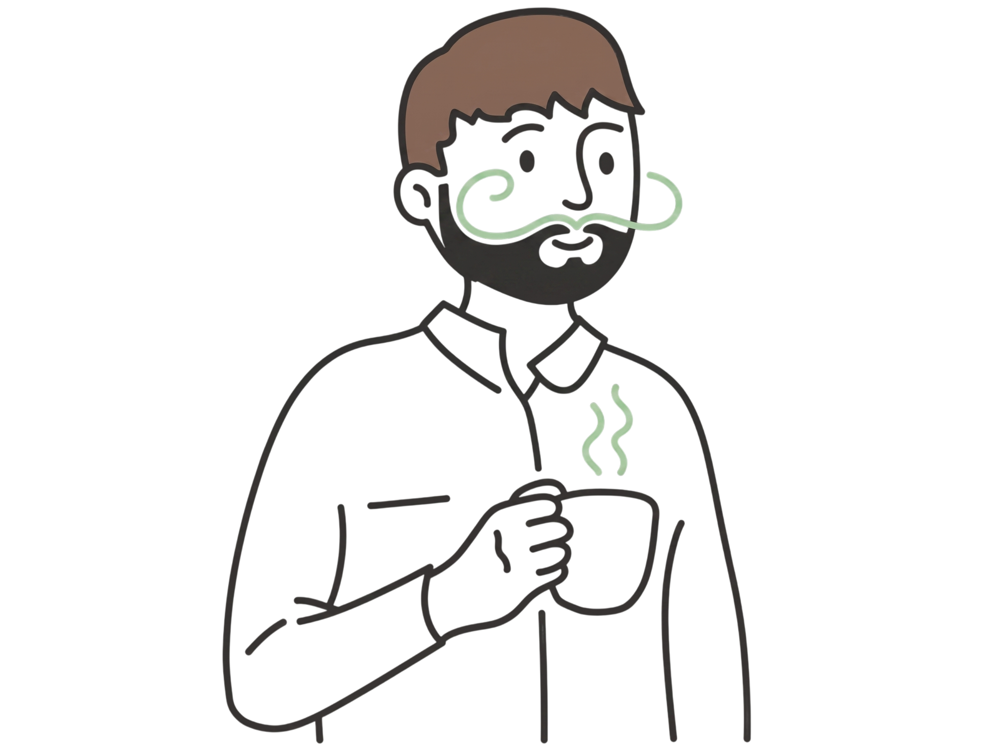

I'm Tim, a CS + Education graduate from UIUC. I initially got into computer science because I wanted to build things, but I stuck with it because I realized the most interesting problem in tech isn't the code, but the people that are using it.
I've always been drawn to the relationship between technology and people. Naturally, that led me to project management, UX design, and building things that don't just work, but also feel good to use. Most recently, I led an 8-person team through a full software development cycle and served as a Design Lead on HoloOrbits.
Outside the screen, I have a profound love for writing, music, and pretty much anything creative. I think that background makes me a better builder — I notice fine details, I care about feel, and I ask questions that don't always show up in a product brief.